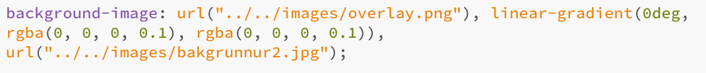
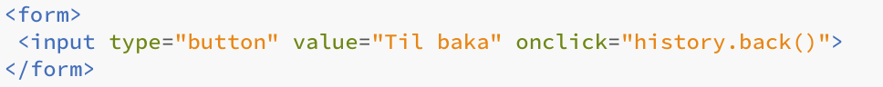
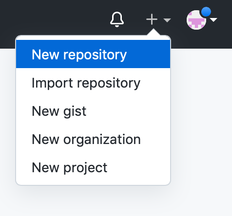
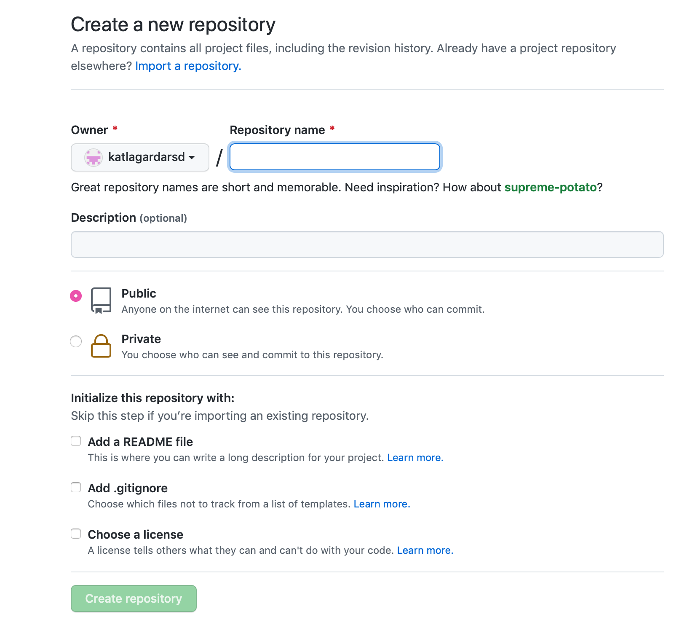
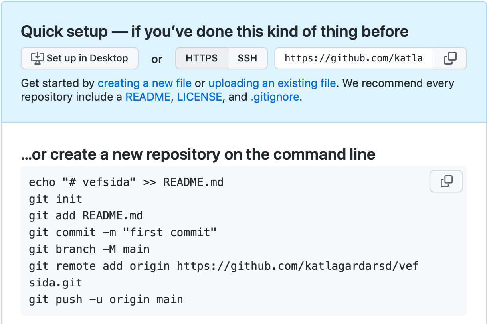
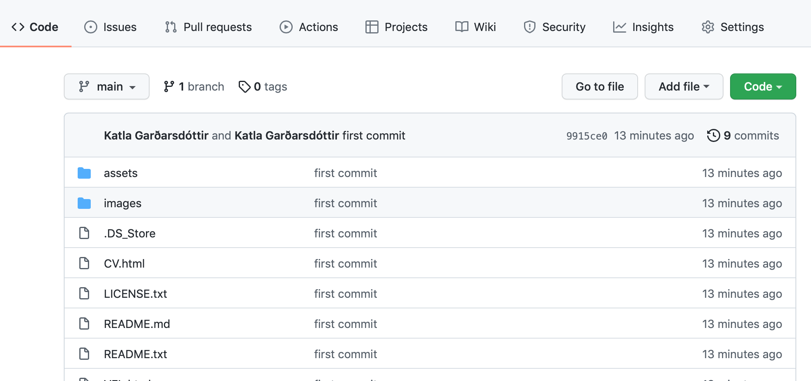
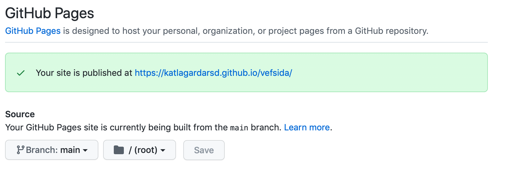

Verkefni 1:
Vefsíðugerð
Fyrsta verkefni annarinnar var að búa til vel skipulagða vefsíðu sem síðan heldur utan um öll verkefnin sem verða unnin í áfanganum VÉL608G en hér má lesa nánar um áfangann.
Þar sem ég hafði ekki mikla þekkingu á gerð vefsíðna fyrir þetta verkefni byrjaði ég á því að horfa á myndbönd HTML myndband1 og HTML myndband2 á Youtube. Mælt var með forritinu Brackets svo að ég hlóð því niður. (setja link). Því næst fór ég inn á vefsíðuna html5up.net til að velja mér template og ég ákvað að nota templateið Massively því það er sílhreint og flott.

Mig langaði að bæta inn takka svo hægt sé að fara til baka og það gerði ég með að bæta inn kóðanum:.......

Þegar að vefsíðan var nokkurn vegin tilbúin var næsta skref að hlaða henni upp í Github. Þar sem ég var ekki með aðgang að Github byrjaði ég á því að búa mér til aðgang. Þar á eftir horfði ég á GITHUB myndband1 á Youtube og fór eftir þeim leiðbeiningum sem komu fram í myndbandinu.
- Það fyrsta sem ég gerði var að fara inn á Github aðganginn minn og búa til nýtt respetory fyrir verkefnið mitt. Þann hnapp má finna undir plúsinum í hægra horninu á Github síðunni. 
- Næst fyllum við inn í gluggann Respetory name og pössum að það sé hakað í Public hnappinn þar sem við viljum að aðrir geti séð vefsíðuna. Þegar það er komið er ýtt á hnappinn Create repository.
 - Næst opnum við Terminal en það er gert með því að hægrismella á möppuna sem skrárnar fyrir vefsíðuna eru geymdar og þar ýtum við á New terminal at folder og þá ætti að opnast terminal gluggi. Þá förum við aftur inn á Github og coperum textann á síðunni sem opnaðist inn á terminal gluggann.

Þegar búið er að afrita kóðann inn á terminal gluggann og ýta á enter þarf maður að skrá notendanafnið og lykilorð (Token) inn. Ég lenti í smá vandræðum þar því ég var ekki búin að búa mér til Token en ég gerði það með því að fara eftir leiðbeiningum sem ég fann á þessari síðu. - Nú ættu allar skrár að vera komnar inn á Github síðuna og ætti að líta svona út.

Þá förum við í settings í hægra horninu og þar förum við í GitHub pages. Þar breytum við None í Main og ýtum á save og þá ætti síðan að verða svona: 
Nú er hægt að nota þennan link sem birtist til þess að deila síðunni með öðrum.
Leitarorð:
Go back button html